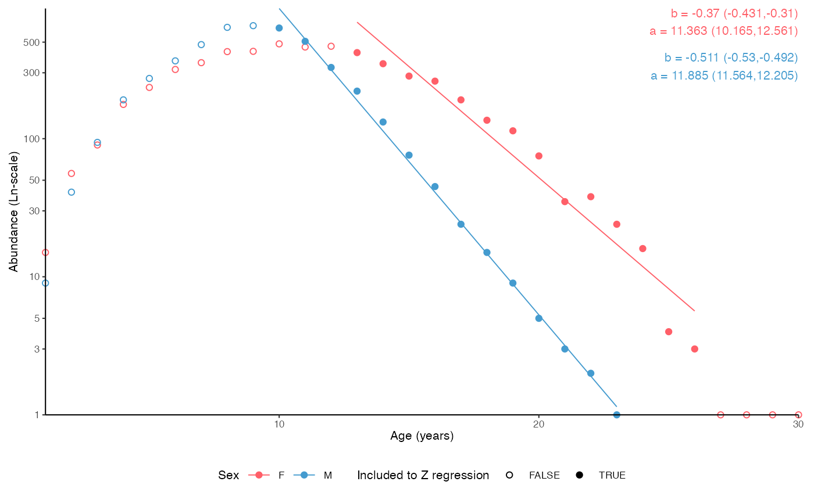

Plot a catch curve to estimate instantaneous total mortality (Z) using age data
plot_catchcurve(
dt,
age = "age",
sex = "sex",
age.range = NULL,
female.sex = "F",
male.sex = "M",
split.by.sex = FALSE,
base_size = 8,
legend.position = "bottom"
)A data.frame, tibble or data.table
Character argument giving the name of the age column in dt
Character argument giving the name of the sex column in dt. Ignored if split.by.sex == FALSE.
Defines the age range to be used for Z estimation. If NULL, all ages are used. If a numeric vector of length 2, the first number defines the minimum age to include and the last number the maximum age. It is also possible to use differring ranges by sex when split.by.sex = TRUE: use a named list with 'female' and 'male' as names. Provide a numeric vector of length 2 to each element. See Examples.
A character denoting female sex in the sex column of dt
A character denoting male sex in the sex column of dt
Logical indicating whether the result should be split by sex.
Base size parameter for ggplot. See ggtheme.
Position of the ggplot legend as a character. See ggtheme.
Calculates and plots the basic log-linearized catch curve to estimate instantaneous mortality. See e.g. Ogle (2013).
# Catch curve including all ages
data(survey_ghl)
plot_catchcurve(survey_ghl)
#> $plot
#>
#> $text
#> [1] "Instantenous total mortality (Z) estimated using a catch curve and\nage range .\n\nZ = 0.19 (0.123-0.257 95% CIs)\nN at age 0 = 1448 (449-4674 95% CIs)\nLongevity = 38.3 (23.8-68.8 95% CIs)\n\n"
#>
#> $params
#> # A tibble: 2 × 8
#> sex term estimate std.error statistic p.value conf.low conf.high
#> <chr> <chr> <dbl> <dbl> <dbl> <dbl> <dbl> <dbl>
#> 1 both (Intercept) 7.28 0.573 12.7 2.25e-13 6.11 8.45
#> 2 both age -0.190 0.0328 -5.79 2.85e- 6 -0.257 -0.123
#>
# \donttest{
# Specific ages
plot_catchcurve(survey_ghl, age.range = c(10,26))
#> $plot
#>
#> $text
#> [1] "Instantenous total mortality (Z) estimated using a catch curve and\nage range 10-26.\n\nZ = 0.356 (0.312-0.401 95% CIs)\nN at age 0 = 68394 (29985-156005 95% CIs)\nLongevity = 31.2 (25.7-38.3 95% CIs)\n\n"
#>
#> $params
#> # A tibble: 2 × 8
#> sex term estimate std.error statistic p.value conf.low conf.high
#> <chr> <chr> <dbl> <dbl> <dbl> <dbl> <dbl> <dbl>
#> 1 both (Intercept) 11.1 0.387 28.8 1.54e-14 10.3 12.0
#> 2 both age -0.356 0.0207 -17.2 2.81e-11 -0.401 -0.312
#>
# Split by sex
plot_catchcurve(survey_ghl, age.range = c(10,26), split.by.sex = TRUE)
#> $plot
#>
#> $text
#> [1] "Instantenous total mortality (Z) estimated using a catch curve and\nage range 10-26 for both sexes.\n\nFemales:\nZ = 0.31 (0.256-0.365 95% CIs)\nN at age 0 = 23925 (8625-66368 95% CIs)\nLongevity = 32.5 (24.8-43.4 95% CIs)\n\nMales:\nZ = 0.511 (0.492-0.53 95% CIs)\nN at age 0 = 145002 (105241-199785 95% CIs)\nLongevity = 23.3 (21.8-24.8 95% CIs)\n\n"
#>
#> $params
#> # A tibble: 4 × 8
#> sex term estimate std.error statistic p.value conf.low conf.high
#> <chr> <chr> <dbl> <dbl> <dbl> <dbl> <dbl> <dbl>
#> 1 F (Intercept) 10.1 0.479 21.1 1.49e-12 9.06 11.1
#> 2 F age -0.310 0.0257 -12.1 3.87e- 9 -0.365 -0.256
#> 3 M (Intercept) 11.9 0.147 80.8 8.62e-18 11.6 12.2
#> 4 M age -0.511 0.00866 -59.0 3.72e-16 -0.530 -0.492
#>
# Split by sex, separate age.range
plot_catchcurve(survey_ghl,
age.range = list(female = c(13,26), male = c(10,26)),
split.by.sex = TRUE)
#> $plot

#>
#> $text
#> [1] "Instantenous total mortality (Z) estimated using a catch curve and\nage range 13-26 for females and 10-26 for males.\n\nFemales:\nZ = 0.37 (0.31-0.431 95% CIs)\nN at age 0 = 86119 (25990-285354 95% CIs)\nLongevity = 30.7 (23.6-40.5 95% CIs)\n\nMales:\nZ = 0.511 (0.492-0.53 95% CIs)\nN at age 0 = 145002 (105241-199785 95% CIs)\nLongevity = 23.3 (21.8-24.8 95% CIs)\n\n"
#>
#> $params
#> # A tibble: 4 × 8
#> sex term estimate std.error statistic p.value conf.low conf.high
#> <chr> <chr> <dbl> <dbl> <dbl> <dbl> <dbl> <dbl>
#> 1 F (Intercept) 11.4 0.550 20.7 9.51e-11 10.2 12.6
#> 2 F age -0.370 0.0276 -13.4 1.38e- 8 -0.431 -0.310
#> 3 M (Intercept) 11.9 0.147 80.8 8.62e-18 11.6 12.2
#> 4 M age -0.511 0.00866 -59.0 3.72e-16 -0.530 -0.492
#>
# }